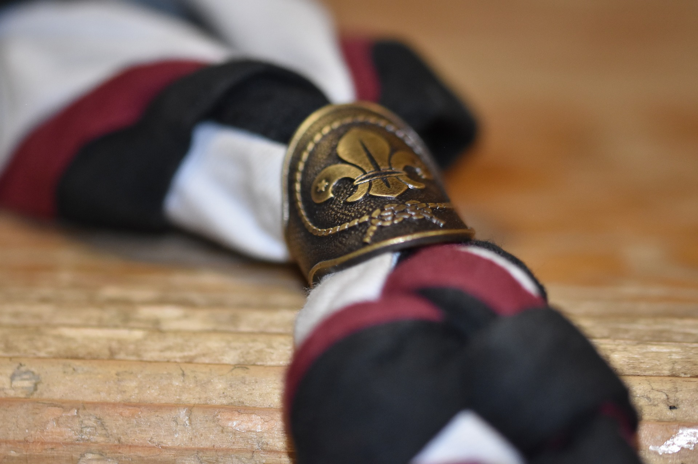

Ik ben een fervente lezer. Een groot deel van mijn vrije tijd spendeer ik hieraan. Het is een manier om even tot rust te komen en om je creatieve kant te activeren.
Bijna iedere zondag kan je mij vinden op het terrein van mijn scoutsgroep als leider. Dit is ondertussen al het 6e jaar dat ik leiding ben. Op een actieve wijze mijn leden vermaken is een van de toppunten van mijn week! PS: Mijn totem is Zelfbewuste Eland.
 Start